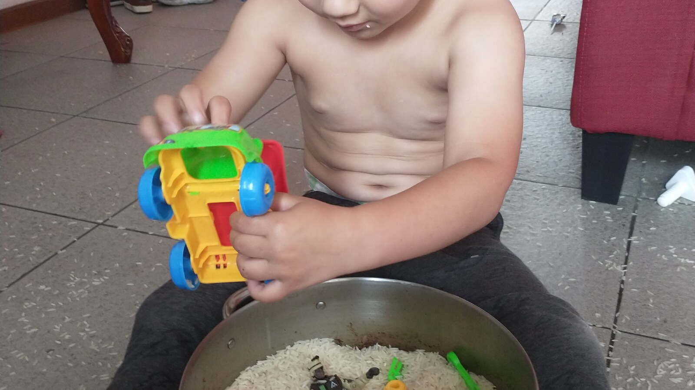
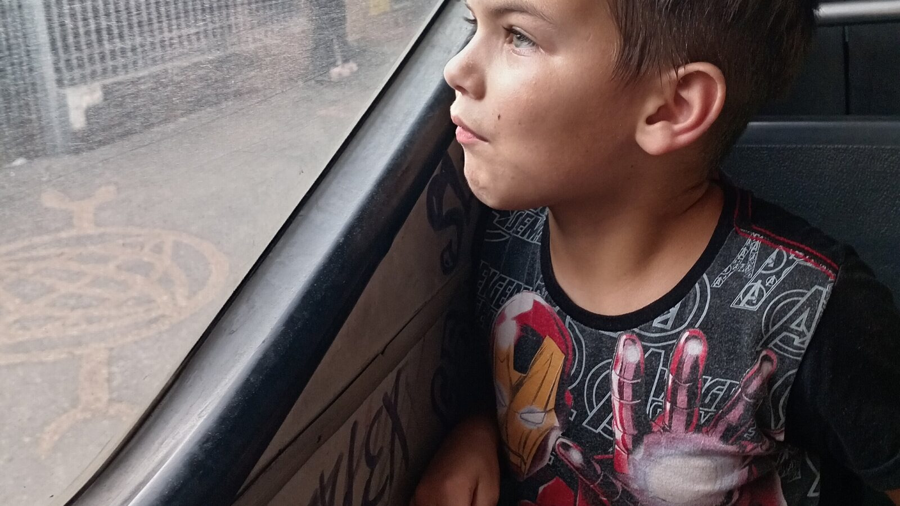
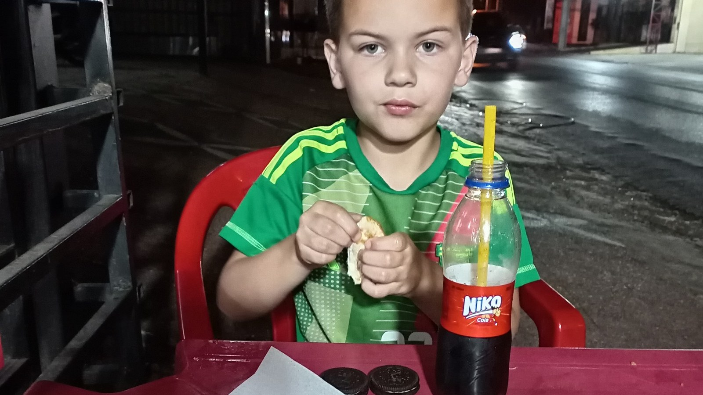

What Makes a Home Safe for an Autistic Adult?
Explore the physical, relational, medical, and personal protections that can make a home safer for an autistic adult with significant support needs.
Read the full articlePractical guidance for families thinking about lifelong care, adult housing, legal protection, financial planning, and meaningful lives for adults with developmental disabilities.
Explore the physical, relational, medical, and personal protections that can make a home safer for an autistic adult with significant support needs.
Read the full articleLearn how thoughtful lighting, sound, movement, materials, predictability, and resident choice can make housing more supportive for autistic adults.
Read the full articleDisability housing must meet safety and accessibility standards, but good homes also reflect each resident's routines, relationships, preferences, and changing needs.
Read the full article
Learn how group homes for autistic adults work, including household size, staffing, privacy, daily life, costs, safety, and the questions families should ask before considering a placement.
Read the full articleCompare group homes and residential communities for autistic adults, including staffing, privacy, community access, aging, and long-term support.
Read the full articleLearn why Casa de SAM plans small family-style homes for adults with significant disabilities and how privacy, choice, safety, and permanence shape the vision.
Read the full article
Learn what safe, dignified housing should provide when an autistic adult needs continuous supervision, communication support, personal care, and a home capable of adapting across a lifetime.
Read the full articleSee how continuous support works across mornings, outings, meals, evenings, overnight care, staffing, communication, and family involvement without turning a home into constant supervision.
Read the full article
Independence may be valuable for many autistic people, but it is not the only measure of dignity, adulthood, quality of life, or success. Families must weigh the individual person, the goal, and its real cost.
Read the full article
Compare family homes, independent apartments, supported living, group homes, residential communities, and higher-support care while considering safety, funding, staffing, and long-term stability.
Read the full article
Learn how supported living combines a home or apartment with individualised help for meals, personal care, medication, transportation, household routines, communication, and safety.
Read the full article
Compare staffing, privacy, safety, daily assistance, control of the home, overnight support, and long-term adaptability across three common adult housing models.
Read the full article
A practical guide to the legal, educational, medical, benefits, housing, and support changes that can begin when an autistic child reaches adulthood.
Read the full article
Explore daily living skills, safety, supported housing, Medicaid, emergency planning, and why independence should be measured task by task rather than treated as an all-or-nothing label.
Read the full article
A practical look at the housing, care, relationships, finances, oversight, backup planning, and aging support required to build a lifelong system that does not depend on one caregiver.
Read the full article
A practical guide to legal authority, housing, financial protection, public benefits, care records, emergency planning, and building a support system that does not depend on one person.
Read the full article
Explore family care, supported apartments, shared housing, group homes, residential communities, funding questions, provider evaluations, and the support services that turn a placement into a real home.
Read the full article
Learn why legal, financial, medical, housing, benefits, and transition planning should begin before adulthood—and which small steps families can take now.
Read the full articleThe Vision Behind the Blog
We are building a long-term vision where adults with developmental disabilities can live with safety, dignity, and meaningful daily life. We believe joyful living is inherently valuable. Our promise to families is that, once a resident is fully accepted, Casa de SAM will care for their adult child for life.
Read Our Full Vision